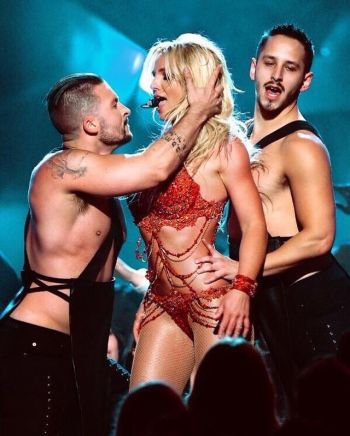

Поп-музыка (англ. pop-music от popular music) — направление современной музыки, вид современной массовой культуры. Является отдельным жанром популярной музыки.
Основные черты поп-музыки как массовой культуры — простота, инструментальная часть и ритм, с меньшим вниманием к вокалу. Основная и практически единственная форма композиции в поп-музыке — песня.
Поп-музыка включает в себя такие поджанры, как европоп, латина, синтипоп, танцевальная музыка, различные поджанры 60-х и другие.
Характеристики:
Музыкальные критики выделяют следующие критерии поп-музыки как музыкального жанра.
Песни строятся по консервативной схеме куплет+припев. От поп-песни требуются простые, лёгкие для восприятия мелодии. Основной инструмент в поп-музыке — человеческий голос. Аккомпанементу уделяется второстепенная роль: аккомпанирующие поп-музыканты не играют соло и чаще всего не являются ни авторами песен, ни лидерами групп. Важную роль в поп-музыке играет ритмическая структура: многие поп-песни пишутся для танцев и имеют чёткий, неизменный бит.
Основная музыкальная единица в поп-музыке — отдельная песня или сингл. Средняя длина песни, как правило, бывает от 2 до 4 минут, что соответствует радио-дружественному формату. Продолжительные композиции с обширными инструментальными партиями практически не встречаются, как и концептуальные альбомы.
Тексты в поп-песнях, как правило, посвящены личным переживаниям, эмоциям: любви, грусти, радости. Большое значение имеет также визуальное представление песен: концертное шоу и видеоклипы. Поэтому многие поп-исполнители имеют экстравагантный имидж. В группу поп-исполнителя часто входят танцоры, статисты и прочие люди, не задействованные в исполнении музыки, но играющие важную роль на концертах.
Несмотря на долгую и бурную историю, поп консервативен. Он имеет тенденцию отражать текущую музыкальную конъюнктуру, а не прогрессивные направления. Это связано с тем, что издатели, как правило, не настроены на коммерческий риск и благоволят исполнителям в проверенных жанрах. В связи с этим поп ориентирован на абстрактную среднюю аудиторию, а не субкультуру фанатов.
A-ha — норвежская музыкальная группа, созданная в 1982 году в городе Осло и работающая в стиле электро-поп, появившемся на излёте «новой волны». Музыке a-ha присущи графичный, холодноватый («скандинавский») стиль, синтезаторно-гитарное звучание, выразительная балладная мелодика.
A-ha продали свыше 80 миллионов экземпляров своих альбомов и 15 миллионов синглов по всему миру. Группа выиграла множество наград от MTV Video Music Awards, их клип на композицию «Take on Me» победил в таких номинациях как: «Лучшее видео дебютанта», «Лучшее концептуальное видео», «Лучшая постановка», «Most Experimental Video», «Лучшие спецэффекты» и «Viewer’s Choice». Видеоклип на песню «The Sun Always Shines on TV» получил награду в номинации «Best Editing».
Состав:
• Мортен Харкет (Morten Harket; род. 14 сентября 1959) — вокал, гитара, тексты, музыка.
• Пол Воктор-Савой (Paul Waaktaar-Savoy; род. 6 сентября 1961) — гитара, ударные, бэк-вокал, тексты, музыка.
• Магне Фурухольмен (Magne Furuholmen; род. 1 ноября 1962) — клавишные, гитара, бэк-вокал, тексты, музыка.
Участники туров:
• Эрик Люнгрен (Erik Ljunggren) — программирование/клавишные/бас-гитара (2009—2010, 2011)
• Карл-Олаф Веннерберг (Karl-Oluf Wennerberg) — ударные (2009—2010, 2011)
• Кётил Бёркестранд (Kjetil Bjerkestrand) — клавишные (эпизодически)
• Пер Линдвалл (Per Lindvall) — ударные (2000—2007)
• Свен Линдвалл (Sven Lindvall) — бас-гитара (2000—2007)
• Кристер Карлсон (Krister Karlsson) — клавишные (2000—2007)
Дискография:
• Hunting High and Low (1985)
• Scoundrel Days (1986)
• Stay on These Roads (1988)
• East of the Sun, West of the Moon (1990)
• Memorial Beach (1993)
• Minor Earth Major Sky (2000)
• Lifelines (2002)
• Analogue (2005)
• Foot of the Mountain (2009)
• Cast in Steel (2015)
Игорь Евгеньевич Корнелюк (белор. Ігар Яўгенавіч Карнялюк; 16 ноября 1962, Брест, Белорусская ССР) — советский и российский композитор и певец. Заслуженный деятель искусств Российской Федерации (2007).
• 1988 — «Билет на балет»
• 1990 — «Подожди»
• 1993 — «Я не могу так жить»
• 1994 — «Мои любимые песни» (Сборник)
• 1998 — «Привет, а это Корнелюк!»
• 2001 — «Саундтрек к сериалу «Бандитский Петербург»» (OST)
• 2010 — «Песни из кино» (Сборник)
• 2010 — «Тарас Бульба» (OST)
• 2010 — «Мастер и Маргарита» (OST)
Бритни Джин Спирс (англ. Britney Jean Spears; род. 2 декабря 1981, Маккомб, Миссисипи, США) — американская поп-певица, обладательница премии «Грэмми», танцовщица, автор песен, киноактриса.
Её дебютный альбом …Baby One More Time сделал её всемирно популярной, а одноимённый сингл возглавил чарт Billboard Hot 100. Первый альбом Бритни содержал пять мощных хитов. Успешный дебют певицы в музыке породил большой общественный резонанс: так, The Daily Yomiuri назвала её «самым одарённым несовершеннолетним поп-идолом последних лет», а по мнению Rolling Stone, «Бритни Спирс — классический стереотип подростковой королевы рок-н-ролла, ангельский ребёнок, который просто должен быть на сцене». Вторая пластинка Спирс Oops!… I Did It Again вышла весной 2000 года и только закрепила её статус поп-звезды. Её третий альбом Britney вышел осенью 2001 года, а следующий — In the Zone — осенью 2003. За сингл «Toxic» Спирс получила свою первую статуэтку «Грэмми». Сборник хитов Greatest Hits: My Prerogative был выпущен осенью 2004 года, за ним последовал сборник ремиксов B in the Mix: The Remixes. После перерыва в карьере в октябре 2007 года вышел альбом Blackout, его первый сингл «Gimme More» стал всемирным хитом. За песню «Piece of Me» она получила три награды: за лучшую поп-песню, лучшее женское видео и видео 2007 года. В декабре 2008 года вышел новый альбом Спирс — Circus, а первый сингл «Womanizer» снова возглавил Billboard Hot 100. Далее «3» — первый сингл с сборника синглов The Singles Collection. Этот сингл дебютировал с 1-го места в чарте Billboard Hot 100 даже без промоакций: видеоклипа и выступлений. После одного года молчания Бритни выпускает сингл «Hold It Against Me», который становится вторым подряд синглом, дебютировавшим на первом месте Hot 100 с продажами 411 тысяч копий за первую неделю. Седьмой альбом певицы Femme Fatale подарил миру 3 сингла в десятке лучших синглов чарта Billboard Hot 100. Восьмая пластинка Britney Jean, выпущенная в 2013-м, достигла четвёртой строчки в Billboard 200 с продажами 107 тысяч копий в первую неделю.
Согласно данным компании Американской ассоциации звукозаписывающих компаний, Бритни Спирс продала более 100 миллионов копий своих альбомов по всему миру, а вместе с проданными синглами — свыше 200 миллионов пластинок. Её дебютный альбом …Baby One More Time был продан тиражом 30 миллионов экземпляров, а второй — Oops!… I Did It Again — тиражом 26 миллионов копий, и дебютировал с первой строчки чартов продаж в первую неделю тиражом 1 319 193 копий в одних только Соединённых Штатах, что позволило Бритни попасть в книгу рекордов Гиннесса как рекордсменке продаж сингла за первую неделю в истории музыки. Уже после двух этих дисков Бритни Спирс признана самой продаваемой певицей последнего десятилетия в Америке. В списке самых богатых женщин мира, занятых в индустрии развлечений, по версии журнала Forbes певица заняла 12-е место.
Спирс проявила себя не только в музыке, но и в кино. Она исполнила главную роль в фильме «Перекрёстки», выпущенном в 2002 году, участвовала в различных телевизионных программах. Её слава помогла ей заключить несколько выгодных рекламных контрактов. В 2008 году на экраны вышел биографический фильм Фила Гриффина «Бритни Спирс. Жизнь за стекломruen». В 2012 году Спирс стала судьёй второго сезона шоу The X Factor USA, заключив контракт на 15 миллионов долларов, а журнал Forbes назвал Бритни Спирс самой высокооплачиваемой певицей в Голливуде по итогам на май 2012 года.
Личная жизнь Спирс всегда вызывала интерес со стороны общественности. Широко обсуждался её брак с Кевином Федерлайном в 2004 году, последующий развод и судебный процесс за право опеки над детьми. 
Дискография, Студийные альбомы:
• …Baby One More Time (1999)
• Oops!… I Did It Again (2000)
• Britney (2001)
• In the Zone (2003)
• Blackout (2007)
• Circus (2008)
• Femme Fatale (2011)
• Britney Jean (2013)
• TBA (2016)